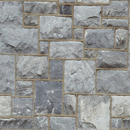
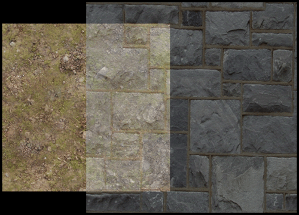
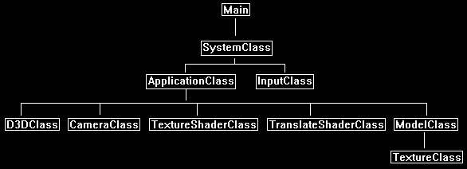

Transparency is the effect that allows textured objects to appear see-through. For example, take the following texture:

We can make it half transparent and then render it over another texture to create the following transparency effect:

Transparency is implemented in DirectX 11 and HLSL by using alpha blending.
The alpha component of any pixel is used to determine the transparency of that pixel.
For example, if a pixel alpha value is 0.5 then it would appear half transparent.
Many textures have an alpha component that can be modified to make the texture transparent in some areas and opaque in others.
However, for alpha values to take effect you have to first turn on alpha blending in the shader and set the blending equation for how to blend pixels.
In this tutorial we modify the blending state in the D3DClass such as follows:
blendStateDescription.RenderTarget[0].BlendEnable = TRUE;
blendStateDescription.RenderTarget[0].SrcBlend = D3D11_BLEND_SRC_ALPHA;
blendStateDescription.RenderTarget[0].DestBlend = D3D11_BLEND_INV_SRC_ALPHA;
DestBlend is for the destination color.
It is the pixel that already exists in this location.
The blending function we are going to use for the destination is INV_SRC_ALPHA which is the inverse of the source alpha.
This equates to one minus the source alpha value.
For example, if the source alpha is 0.3 then the dest alpha would be 0.7 so we will combine 70% of the destination pixel color in the final combine.
SrcBlend is for the source pixel which will be the input texture color value in this tutorial.
The function we are going to use is SRC_ALPHA which is the source color multiplied by its own alpha value.
The source and destination value will be added together to produce the final output pixel.
Framework
The framework for this tutorial has a new class called TransparentShaderClass.
This class is the same as the TextureShaderClass except that is has an alpha blending value.

D3dclass.cpp
As discussed we have just modified the blend state inside the D3DClass::Initialize function so that texture transparency works.
This is the only change to that class.
// Create an alpha enabled blend state description.
blendStateDescription.RenderTarget[0].BlendEnable = TRUE;
blendStateDescription.RenderTarget[0].SrcBlend = D3D11_BLEND_SRC_ALPHA;
blendStateDescription.RenderTarget[0].DestBlend = D3D11_BLEND_INV_SRC_ALPHA;
blendStateDescription.RenderTarget[0].BlendOp = D3D11_BLEND_OP_ADD;
blendStateDescription.RenderTarget[0].SrcBlendAlpha = D3D11_BLEND_ONE;
blendStateDescription.RenderTarget[0].DestBlendAlpha = D3D11_BLEND_ZERO;
blendStateDescription.RenderTarget[0].BlendOpAlpha = D3D11_BLEND_OP_ADD;
blendStateDescription.RenderTarget[0].RenderTargetWriteMask = 0x0f;
Transparent.vs
The transparent texture vertex shader is the same as the regular texture vertex shader.
////////////////////////////////////////////////////////////////////////////////
// Filename: transparent.vs
////////////////////////////////////////////////////////////////////////////////
/////////////
// GLOBALS //
/////////////
cbuffer MatrixBuffer
{
matrix worldMatrix;
matrix viewMatrix;
matrix projectionMatrix;
};
//////////////
// TYPEDEFS //
//////////////
struct VertexInputType
{
float4 position : POSITION;
float2 tex : TEXCOORD0;
};
struct PixelInputType
{
float4 position : SV_POSITION;
float2 tex : TEXCOORD0;
};
////////////////////////////////////////////////////////////////////////////////
// Vertex Shader
////////////////////////////////////////////////////////////////////////////////
PixelInputType TransparentVertexShader(VertexInputType input)
{
PixelInputType output;
// Change the position vector to be 4 units for proper matrix calculations.
input.position.w = 1.0f;
// Calculate the position of the vertex against the world, view, and projection matrices.
output.position = mul(input.position, worldMatrix);
output.position = mul(output.position, viewMatrix);
output.position = mul(output.position, projectionMatrix);
// Store the texture coordinates for the pixel shader.
output.tex = input.tex;
return output;
}
Transparent.ps
////////////////////////////////////////////////////////////////////////////////
// Filename: transparent.ps
////////////////////////////////////////////////////////////////////////////////
/////////////
// GLOBALS //
/////////////
Texture2D shaderTexture : register(t0);
SamplerState SampleType : register(s0);
We add a new constant buffer to hold the blendAmount variable.
The blendAmount indicates was percentage to blend the texture.
The acceptable value range is a float value from 0 to 1.
In this tutorial it is set to 0.5 which means 50% transparency.
cbuffer TransparentBuffer
{
float blendAmount;
};
//////////////
// TYPEDEFS //
//////////////
struct PixelInputType
{
float4 position : SV_POSITION;
float2 tex : TEXCOORD0;
};
////////////////////////////////////////////////////////////////////////////////
// Pixel Shader
////////////////////////////////////////////////////////////////////////////////
float4 TransparentPixelShader(PixelInputType input) : SV_TARGET
{
float4 color;
// Sample the texture pixel at this location.
color = shaderTexture.Sample(SampleType, input.tex);
Here we use the blendAmount variable to set the transparency of the texture.
We set the alpha value of the pixel to the blend amount and when rendered it will use the alpha value with the blend state we setup to create the transparency effect.
// Set the alpha value of this pixel to the blending amount to create the alpha blending effect.
color.a = blendAmount;
return color;
}
Transparentshaderclass.h
The TransparentShaderClass is the same as the TextureShaderClass with some extra changes to accommodate transparency.
////////////////////////////////////////////////////////////////////////////////
// Filename: transparentshaderclass.h
////////////////////////////////////////////////////////////////////////////////
#ifndef _TRANSPARENTSHADERCLASS_H_
#define _TRANSPARENTSHADERCLASS_H_
//////////////
// INCLUDES //
//////////////
#include <d3d11.h>
#include <d3dcompiler.h>
#include <directxmath.h>
#include <fstream>
using namespace DirectX;
using namespace std;
////////////////////////////////////////////////////////////////////////////////
// Class name: TransparentShaderClass
////////////////////////////////////////////////////////////////////////////////
class TransparentShaderClass
{
private:
struct MatrixBufferType
{
XMMATRIX world;
XMMATRIX view;
XMMATRIX projection;
};
We have a new buffer type to match the constant buffer inside the pixel shader.
We add 12 bytes of padding so the CreateBuffer function won't fail.
struct TransparentBufferType
{
float blendAmount;
XMFLOAT3 padding;
};
public:
TransparentShaderClass();
TransparentShaderClass(const TransparentShaderClass&);
~TransparentShaderClass();
bool Initialize(ID3D11Device*, HWND);
void Shutdown();
bool Render(ID3D11DeviceContext*, int, XMMATRIX, XMMATRIX, XMMATRIX, ID3D11ShaderResourceView*, float);
private:
bool InitializeShader(ID3D11Device*, HWND, WCHAR*, WCHAR*);
void ShutdownShader();
void OutputShaderErrorMessage(ID3D10Blob*, HWND, WCHAR*);
bool SetShaderParameters(ID3D11DeviceContext*, XMMATRIX, XMMATRIX, XMMATRIX, ID3D11ShaderResourceView*, float);
void RenderShader(ID3D11DeviceContext*, int);
private:
ID3D11VertexShader* m_vertexShader;
ID3D11PixelShader* m_pixelShader;
ID3D11InputLayout* m_layout;
ID3D11Buffer* m_matrixBuffer;
ID3D11SamplerState* m_sampleState;
We have a new buffer variable to provide an interface to the blendAmount value inside the transparent HLSL pixel shader.
ID3D11Buffer* m_transparentBuffer;
};
#endif
Transparentshaderclass.cpp
////////////////////////////////////////////////////////////////////////////////
// Filename: transparentshaderclass.cpp
////////////////////////////////////////////////////////////////////////////////
#include "transparentshaderclass.h"
TransparentShaderClass::TransparentShaderClass()
{
m_vertexShader = 0;
m_pixelShader = 0;
m_layout = 0;
m_matrixBuffer = 0;
m_sampleState = 0;
Initialize the new transparent constant buffer to null inside the class constructor.
m_transparentBuffer = 0;
}
TransparentShaderClass::TransparentShaderClass(const TransparentShaderClass& other)
{
}
TransparentShaderClass::~TransparentShaderClass()
{
}
bool TransparentShaderClass::Initialize(ID3D11Device* device, HWND hwnd)
{
bool result;
wchar_t vsFilename[128];
wchar_t psFilename[128];
int error;
We load the transparent.vs and transparent.ps HLSL shader files here.
// Set the filename of the vertex shader.
error = wcscpy_s(vsFilename, 128, L"../Engine/transparent.vs");
if(error != 0)
{
return false;
}
// Set the filename of the pixel shader.
error = wcscpy_s(psFilename, 128, L"../Engine/transparent.ps");
if(error != 0)
{
return false;
}
// Initialize the vertex and pixel shaders.
result = InitializeShader(device, hwnd, vsFilename, psFilename);
if(!result)
{
return false;
}
return true;
}
void TransparentShaderClass::Shutdown()
{
// Shutdown the vertex and pixel shaders as well as the related objects.
ShutdownShader();
return;
}
The Render function now takes as input a blend float value which will set the amount of transparency to use in the shader.
bool TransparentShaderClass::Render(ID3D11DeviceContext* deviceContext, int indexCount, XMMATRIX worldMatrix, XMMATRIX viewMatrix,
XMMATRIX projectionMatrix, ID3D11ShaderResourceView* texture, float blend)
{
bool result;
// Set the shader parameters that it will use for rendering.
result = SetShaderParameters(deviceContext, worldMatrix, viewMatrix, projectionMatrix, texture, blend);
if(!result)
{
return false;
}
// Now render the prepared buffers with the shader.
RenderShader(deviceContext, indexCount);
return true;
}
bool TransparentShaderClass::InitializeShader(ID3D11Device* device, HWND hwnd, WCHAR* vsFilename, WCHAR* psFilename)
{
HRESULT result;
ID3D10Blob* errorMessage;
ID3D10Blob* vertexShaderBuffer;
ID3D10Blob* pixelShaderBuffer;
D3D11_INPUT_ELEMENT_DESC polygonLayout[2];
unsigned int numElements;
D3D11_BUFFER_DESC matrixBufferDesc;
D3D11_SAMPLER_DESC samplerDesc;
D3D11_BUFFER_DESC transparentBufferDesc;
// Initialize the pointers this function will use to null.
errorMessage = 0;
vertexShaderBuffer = 0;
pixelShaderBuffer = 0;
Load the transparent vertex shader.
// Compile the vertex shader code.
result = D3DCompileFromFile(vsFilename, NULL, NULL, "TransparentVertexShader", "vs_5_0", D3D10_SHADER_ENABLE_STRICTNESS, 0,
&vertexShaderBuffer, &errorMessage);
if(FAILED(result))
{
// If the shader failed to compile it should have writen something to the error message.
if(errorMessage)
{
OutputShaderErrorMessage(errorMessage, hwnd, vsFilename);
}
// If there was nothing in the error message then it simply could not find the shader file itself.
else
{
MessageBox(hwnd, vsFilename, L"Missing Shader File", MB_OK);
}
return false;
}
Load the transparent pixel shader.
// Compile the pixel shader code.
result = D3DCompileFromFile(psFilename, NULL, NULL, "TransparentPixelShader", "ps_5_0", D3D10_SHADER_ENABLE_STRICTNESS, 0,
&pixelShaderBuffer, &errorMessage);
if(FAILED(result))
{
// If the shader failed to compile it should have writen something to the error message.
if(errorMessage)
{
OutputShaderErrorMessage(errorMessage, hwnd, psFilename);
}
// If there was nothing in the error message then it simply could not find the file itself.
else
{
MessageBox(hwnd, psFilename, L"Missing Shader File", MB_OK);
}
return false;
}
// Create the vertex shader from the buffer.
result = device->CreateVertexShader(vertexShaderBuffer->GetBufferPointer(), vertexShaderBuffer->GetBufferSize(), NULL, &m_vertexShader);
if(FAILED(result))
{
return false;
}
// Create the pixel shader from the buffer.
result = device->CreatePixelShader(pixelShaderBuffer->GetBufferPointer(), pixelShaderBuffer->GetBufferSize(), NULL, &m_pixelShader);
if(FAILED(result))
{
return false;
}
// Create the vertex input layout description.
polygonLayout[0].SemanticName = "POSITION";
polygonLayout[0].SemanticIndex = 0;
polygonLayout[0].Format = DXGI_FORMAT_R32G32B32_FLOAT;
polygonLayout[0].InputSlot = 0;
polygonLayout[0].AlignedByteOffset = 0;
polygonLayout[0].InputSlotClass = D3D11_INPUT_PER_VERTEX_DATA;
polygonLayout[0].InstanceDataStepRate = 0;
polygonLayout[1].SemanticName = "TEXCOORD";
polygonLayout[1].SemanticIndex = 0;
polygonLayout[1].Format = DXGI_FORMAT_R32G32_FLOAT;
polygonLayout[1].InputSlot = 0;
polygonLayout[1].AlignedByteOffset = D3D11_APPEND_ALIGNED_ELEMENT;
polygonLayout[1].InputSlotClass = D3D11_INPUT_PER_VERTEX_DATA;
polygonLayout[1].InstanceDataStepRate = 0;
// Get a count of the elements in the layout.
numElements = sizeof(polygonLayout) / sizeof(polygonLayout[0]);
// Create the vertex input layout.
result = device->CreateInputLayout(polygonLayout, numElements, vertexShaderBuffer->GetBufferPointer(),
vertexShaderBuffer->GetBufferSize(), &m_layout);
if(FAILED(result))
{
return false;
}
// Release the vertex shader buffer and pixel shader buffer since they are no longer needed.
vertexShaderBuffer->Release();
vertexShaderBuffer = 0;
pixelShaderBuffer->Release();
pixelShaderBuffer = 0;
// Setup the description of the dynamic matrix constant buffer that is in the vertex shader.
matrixBufferDesc.Usage = D3D11_USAGE_DYNAMIC;
matrixBufferDesc.ByteWidth = sizeof(MatrixBufferType);
matrixBufferDesc.BindFlags = D3D11_BIND_CONSTANT_BUFFER;
matrixBufferDesc.CPUAccessFlags = D3D11_CPU_ACCESS_WRITE;
matrixBufferDesc.MiscFlags = 0;
matrixBufferDesc.StructureByteStride = 0;
// Create the constant buffer pointer so we can access the vertex shader constant buffer from within this class.
result = device->CreateBuffer(&matrixBufferDesc, NULL, &m_matrixBuffer);
if(FAILED(result))
{
return false;
}
// Create a texture sampler state description.
samplerDesc.Filter = D3D11_FILTER_MIN_MAG_MIP_LINEAR;
samplerDesc.AddressU = D3D11_TEXTURE_ADDRESS_WRAP;
samplerDesc.AddressV = D3D11_TEXTURE_ADDRESS_WRAP;
samplerDesc.AddressW = D3D11_TEXTURE_ADDRESS_WRAP;
samplerDesc.MipLODBias = 0.0f;
samplerDesc.MaxAnisotropy = 1;
samplerDesc.ComparisonFunc = D3D11_COMPARISON_ALWAYS;
samplerDesc.BorderColor[0] = 0;
samplerDesc.BorderColor[1] = 0;
samplerDesc.BorderColor[2] = 0;
samplerDesc.BorderColor[3] = 0;
samplerDesc.MinLOD = 0;
samplerDesc.MaxLOD = D3D11_FLOAT32_MAX;
// Create the texture sampler state.
result = device->CreateSamplerState(&samplerDesc, &m_sampleState);
if(FAILED(result))
{
return false;
}
Setup the constant buffer interface to TransparentBuffer in the pixel shader which holds the blendAmount value.
// Setup the description of the transparent dynamic constant buffer that is in the pixel shader.
transparentBufferDesc.Usage = D3D11_USAGE_DYNAMIC;
transparentBufferDesc.ByteWidth = sizeof(TransparentBufferType);
transparentBufferDesc.BindFlags = D3D11_BIND_CONSTANT_BUFFER;
transparentBufferDesc.CPUAccessFlags = D3D11_CPU_ACCESS_WRITE;
transparentBufferDesc.MiscFlags = 0;
transparentBufferDesc.StructureByteStride = 0;
// Create the constant buffer pointer so we can access the pixel shader constant buffer from within this class.
result = device->CreateBuffer(&transparentBufferDesc, NULL, &m_transparentBuffer);
if(FAILED(result))
{
return false;
}
return true;
}
void TransparentShaderClass::ShutdownShader()
{
Release the new transparent buffer in the ShutdownShader function.
// Release the transparent constant buffer.
if(m_transparentBuffer)
{
m_transparentBuffer->Release();
m_transparentBuffer = 0;
}
// Release the sampler state.
if(m_sampleState)
{
m_sampleState->Release();
m_sampleState = 0;
}
// Release the matrix constant buffer.
if(m_matrixBuffer)
{
m_matrixBuffer->Release();
m_matrixBuffer = 0;
}
// Release the layout.
if(m_layout)
{
m_layout->Release();
m_layout = 0;
}
// Release the pixel shader.
if(m_pixelShader)
{
m_pixelShader->Release();
m_pixelShader = 0;
}
// Release the vertex shader.
if(m_vertexShader)
{
m_vertexShader->Release();
m_vertexShader = 0;
}
return;
}
void TransparentShaderClass::OutputShaderErrorMessage(ID3D10Blob* errorMessage, HWND hwnd, WCHAR* shaderFilename)
{
char* compileErrors;
unsigned long long bufferSize, i;
ofstream fout;
// Get a pointer to the error message text buffer.
compileErrors = (char*)(errorMessage->GetBufferPointer());
// Get the length of the message.
bufferSize = errorMessage->GetBufferSize();
// Open a file to write the error message to.
fout.open("shader-error.txt");
// Write out the error message.
for(i=0; i<bufferSize; i++)
{
fout << compileErrors[i];
}
// Close the file.
fout.close();
// Release the error message.
errorMessage->Release();
errorMessage = 0;
// Pop a message up on the screen to notify the user to check the text file for compile errors.
MessageBox(hwnd, L"Error compiling shader. Check shader-error.txt for message.", shaderFilename, MB_OK);
return;
}
The SetShaderParameters function now takes as input the blend value to be used for modifying the transparency amount in the pixel shader.
bool TransparentShaderClass::SetShaderParameters(ID3D11DeviceContext* deviceContext, XMMATRIX worldMatrix, XMMATRIX viewMatrix,
XMMATRIX projectionMatrix, ID3D11ShaderResourceView* texture, float blend)
{
HRESULT result;
D3D11_MAPPED_SUBRESOURCE mappedResource;
MatrixBufferType* dataPtr;
unsigned int bufferNumber;
TransparentBufferType* dataPtr2;
// Transpose the matrices to prepare them for the shader.
worldMatrix = XMMatrixTranspose(worldMatrix);
viewMatrix = XMMatrixTranspose(viewMatrix);
projectionMatrix = XMMatrixTranspose(projectionMatrix);
// Lock the constant buffer so it can be written to.
result = deviceContext->Map(m_matrixBuffer, 0, D3D11_MAP_WRITE_DISCARD, 0, &mappedResource);
if(FAILED(result))
{
return false;
}
// Get a pointer to the data in the constant buffer.
dataPtr = (MatrixBufferType*)mappedResource.pData;
// Copy the matrices into the constant buffer.
dataPtr->world = worldMatrix;
dataPtr->view = viewMatrix;
dataPtr->projection = projectionMatrix;
// Unlock the constant buffer.
deviceContext->Unmap(m_matrixBuffer, 0);
// Set the position of the constant buffer in the vertex shader.
bufferNumber = 0;
// Finally set the constant buffer in the vertex shader with the updated values.
deviceContext->VSSetConstantBuffers(bufferNumber, 1, &m_matrixBuffer);
// Set shader texture resource in the pixel shader.
deviceContext->PSSetShaderResources(0, 1, &texture);
Here is where we set the blendAmount value inside the pixel shader before rendering.
We lock the transparent constant buffer, copy the blend amount value into the buffer, and then unlock it again so the shader can access the new value.
// Lock the transparent constant buffer so it can be written to.
result = deviceContext->Map(m_transparentBuffer, 0, D3D11_MAP_WRITE_DISCARD, 0, &mappedResource);
if(FAILED(result))
{
return false;
}
// Get a pointer to the data in the transparent constant buffer.
dataPtr2 = (TransparentBufferType*)mappedResource.pData;
// Copy the alpha blending value into the transparent constant buffer.
dataPtr2->blendAmount = blend;
// Unlock the buffer.
deviceContext->Unmap(m_transparentBuffer, 0);
// Set the position of the transparent constant buffer in the pixel shader.
bufferNumber = 0;
// Now set the transparent constant buffer in the pixel shader with the updated values.
deviceContext->PSSetConstantBuffers(bufferNumber, 1, &m_transparentBuffer);
return true;
}
void TransparentShaderClass::RenderShader(ID3D11DeviceContext* deviceContext, int indexCount)
{
// Set the vertex input layout.
deviceContext->IASetInputLayout(m_layout);
// Set the vertex and pixel shaders that will be used to render the geometry.
deviceContext->VSSetShader(m_vertexShader, NULL, 0);
deviceContext->PSSetShader(m_pixelShader, NULL, 0);
// Set the sampler state in the pixel shader.
deviceContext->PSSetSamplers(0, 1, &m_sampleState);
// Render the geometry.
deviceContext->DrawIndexed(indexCount, 0, 0);
return;
}
Applicationclass.h
The ApplicationClass has the transparentshaderclass.h included and a new TransparentShaderClass variable.
We also add two separate models for the dirt and the stone squares that will be displayed on the screen.
The TextureShaderClass is also added to render the base dirt texture without transparency.
////////////////////////////////////////////////////////////////////////////////
// Filename: applicationclass.h
////////////////////////////////////////////////////////////////////////////////
#ifndef _APPLICATIONCLASS_H_
#define _APPLICATIONCLASS_H_
///////////////////////
// MY CLASS INCLUDES //
///////////////////////
#include "d3dclass.h"
#include "inputclass.h"
#include "cameraclass.h"
#include "modelclass.h"
#include "textureshaderclass.h"
#include "transparentshaderclass.h"
/////////////
// GLOBALS //
/////////////
const bool FULL_SCREEN = false;
const bool VSYNC_ENABLED = true;
const float SCREEN_DEPTH = 1000.0f;
const float SCREEN_NEAR = 0.3f;
////////////////////////////////////////////////////////////////////////////////
// Class name: ApplicationClass
////////////////////////////////////////////////////////////////////////////////
class ApplicationClass
{
public:
ApplicationClass();
ApplicationClass(const ApplicationClass&);
~ApplicationClass();
bool Initialize(int, int, HWND);
void Shutdown();
bool Frame(InputClass*);
private:
bool Render();
private:
D3DClass* m_Direct3D;
CameraClass* m_Camera;
ModelClass *m_Model1, *m_Model2;
TextureShaderClass* m_TextureShader;
TransparentShaderClass* m_TransparentShader;
};
#endif
Applicationclass.cpp
////////////////////////////////////////////////////////////////////////////////
// Filename: applicationclass.cpp
////////////////////////////////////////////////////////////////////////////////
#include "applicationclass.h"
ApplicationClass::ApplicationClass()
{
m_Direct3D = 0;
m_Camera = 0;
m_Model1 = 0;
m_Model2 = 0;
m_TextureShader = 0;
m_TransparentShader = 0;
}
ApplicationClass::ApplicationClass(const ApplicationClass& other)
{
}
ApplicationClass::~ApplicationClass()
{
}
bool ApplicationClass::Initialize(int screenWidth, int screenHeight, HWND hwnd)
{
char modelFilename[128], textureFilename1[128], textureFilename2[128];
bool result;
// Create and initialize the Direct3D object.
m_Direct3D = new D3DClass;
result = m_Direct3D->Initialize(screenWidth, screenHeight, VSYNC_ENABLED, hwnd, FULL_SCREEN, SCREEN_DEPTH, SCREEN_NEAR);
if(!result)
{
MessageBox(hwnd, L"Could not initialize Direct3D", L"Error", MB_OK);
return false;
}
// Create and initialize the camera object.
m_Camera = new CameraClass;
m_Camera->SetPosition(0.0f, 0.0f, -5.0f);
m_Camera->Render();
// Set the file name of the model.
strcpy_s(modelFilename, "../Engine/data/square.txt");
We set the two texture names for the dirt and the stone texture and then load the two models so each model has its own texture.
// Set the file names of the textures.
strcpy_s(textureFilename1, "../Engine/data/dirt01.tga");
strcpy_s(textureFilename2, "../Engine/data/stone01.tga");
// Create and initialize the first model object that will use the dirt texture.
m_Model1 = new ModelClass;
result = m_Model1->Initialize(m_Direct3D->GetDevice(), m_Direct3D->GetDeviceContext(), modelFilename, textureFilename1);
if(!result)
{
MessageBox(hwnd, L"Could not initialize the model object.", L"Error", MB_OK);
return false;
}
// Create and initialize the second model object that will use the stone texture.
m_Model2 = new ModelClass;
result = m_Model2->Initialize(m_Direct3D->GetDevice(), m_Direct3D->GetDeviceContext(), modelFilename, textureFilename2);
if(!result)
{
return false;
}
// Create and initialize the texture shader object.
m_TextureShader = new TextureShaderClass;
result = m_TextureShader->Initialize(m_Direct3D->GetDevice(), hwnd);
if(!result)
{
MessageBox(hwnd, L"Could not initialize the texture shader object.", L"Error", MB_OK);
return false;
}
We create and load in the new TransparentShaderClass here.
// Create and initialize the transparent shader object.
m_TransparentShader = new TransparentShaderClass;
result = m_TransparentShader->Initialize(m_Direct3D->GetDevice(), hwnd);
if(!result)
{
MessageBox(hwnd, L"Could not initialize the transparent shader object.", L"Error", MB_OK);
return false;
}
return true;
}
void ApplicationClass::Shutdown()
{
The new TransparentShaderClass is released here.
// Release the transparent shader object.
if(m_TransparentShader)
{
m_TransparentShader->Shutdown();
delete m_TransparentShader;
m_TransparentShader = 0;
}
// Release the texture shader object.
if(m_TextureShader)
{
m_TextureShader->Shutdown();
delete m_TextureShader;
m_TextureShader = 0;
}
We release both square models here.
// Release the model object.
if(m_Model2)
{
m_Model2->Shutdown();
delete m_Model2;
m_Model2 = 0;
}
// Release the model object.
if(m_Model1)
{
m_Model1->Shutdown();
delete m_Model1;
m_Model1 = 0;
}
// Release the camera object.
if(m_Camera)
{
delete m_Camera;
m_Camera = 0;
}
// Release the Direct3D object.
if(m_Direct3D)
{
m_Direct3D->Shutdown();
delete m_Direct3D;
m_Direct3D = 0;
}
return;
}
bool ApplicationClass::Frame(InputClass* Input)
{
bool result;
// Check if the user pressed escape and wants to exit the application.
if(Input->IsEscapePressed())
{
return false;
}
// Render the graphics scene.
result = Render();
if(!result)
{
return false;
}
return true;
}
bool ApplicationClass::Render()
{
XMMATRIX worldMatrix, viewMatrix, projectionMatrix;
float blendAmount;
bool result;
Setup a blend variable that will be sent into the transparent shader.
// Set the blending amount to 50%.
blendAmount = 0.5f;
// Clear the buffers to begin the scene.
m_Direct3D->BeginScene(0.0f, 0.0f, 0.0f, 1.0f);
// Get the world, view, and projection matrices from the camera and d3d objects.
m_Direct3D->GetWorldMatrix(worldMatrix);
m_Camera->GetViewMatrix(viewMatrix);
m_Direct3D->GetProjectionMatrix(projectionMatrix);
Render the first square model with the dirt texture in the center of the screen.
Use just the regular texture shader for this.
// Render the first model that is using the dirt texture using the regular texture shader.
m_Model1->Render(m_Direct3D->GetDeviceContext());
result = m_TextureShader->Render(m_Direct3D->GetDeviceContext(), m_Model1->GetIndexCount(), worldMatrix, viewMatrix, projectionMatrix, m_Model1->GetTexture());
if(!result)
{
return false;
}
Render the second square model with the stone texture slightly to the right and in front of the previous square texture.
Use the new TransparentShaderClass object with the blendAmount input to render the square stone texture with transparency so we can see through it.
Also turn on the alpha blending from the D3DClass before rendering and then turn it off after rendering.
// Translate to the right by one unit and towards the camera by one unit.
worldMatrix = XMMatrixTranslation(1.0f, 0.0f, -1.0f);
// Turn on alpha blending for the transparency to work.
m_Direct3D->EnableAlphaBlending();
// Render the second square model with the stone texture and use the 50% blending amount for transparency.
m_Model2->Render(m_Direct3D->GetDeviceContext());
result = m_TransparentShader->Render(m_Direct3D->GetDeviceContext(), m_Model2->GetIndexCount(), worldMatrix, viewMatrix, projectionMatrix, m_Model2->GetTexture(), blendAmount);
if(!result)
{
return false;
}
// Turn off alpha blending.
m_Direct3D->DisableAlphaBlending();
// Present the rendered scene to the screen.
m_Direct3D->EndScene();
return true;
}
Summary
Using transparency, we can create see through textures and models which allows us to create a number of different effects.
To Do Exercises
1. Recompile the and run the program. Press escape to quit.
2. Change the value of the blendAmount in the Application::Render function to see different amounts of transparency.
Source Code
Source Code and Data Files: dx11win10tut29_src.zip